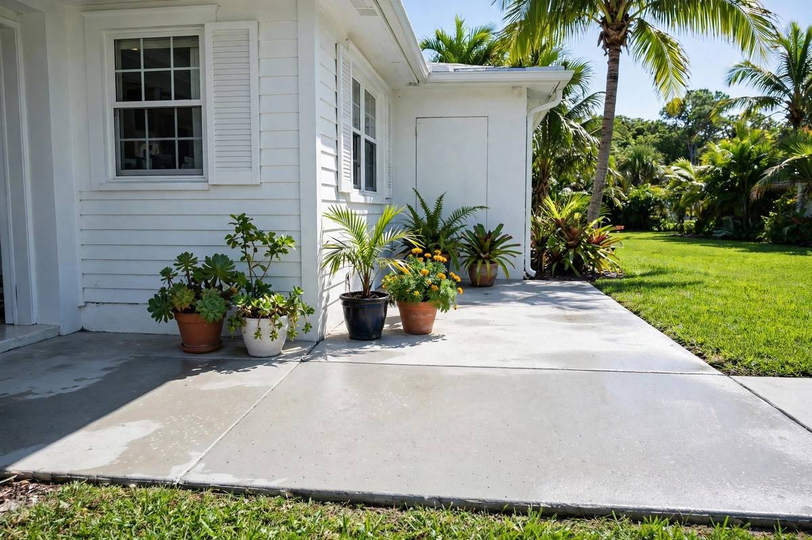
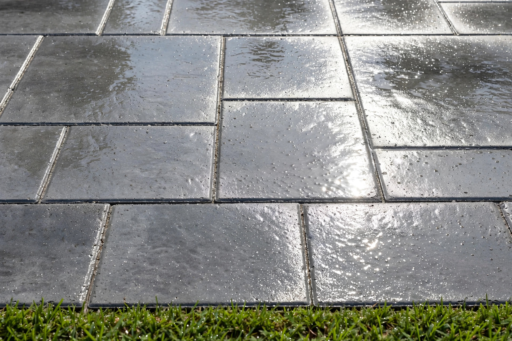
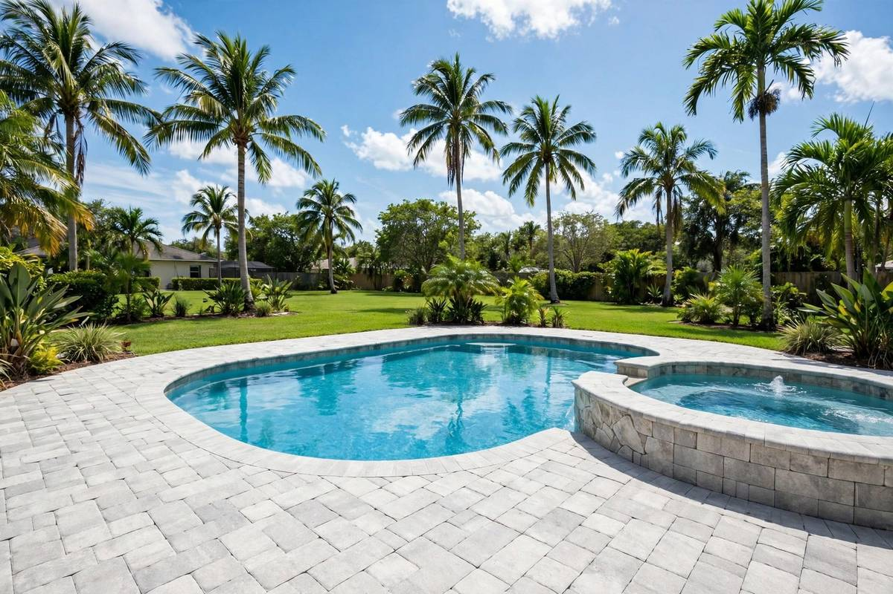

Mildew
Moisture and shade feed mildew growth on concrete, leaving dark patches that spread over time. Fix: a pre-treatment loosens it so it can rinse off.
Jacksonville, FL Concrete Cleaning
Oil, mold and stains wear a driveway down. We clean concrete driveways, walkways and patios with a method matched to the surface.
7-Day Satisfaction Check • Reply within 24 hours
Professional Driveway & Concrete Cleaning
Jacksonville driveways and concrete surfaces collect dirt, algae, grease, pollen, vehicle residue and weather-related buildup over time. That leaves driveways, walkways and patios looking dull, stained or worn.
Our driveway and concrete cleaning removes visible dirt, grime, algae, mildew, organic buildup and suitable surface stains. We check the condition of the concrete first and use a method that fits the surface — no unnecessary pressure.



Florida vs Your Concrete
Rain, humidity, pollen, shade and vehicle traffic work on your driveway all year. Concrete is like a sponge — it soaks mildew, oil and red clay deeper the longer they sit.
That is why a driveway that looked fine last year can look dark and stained this year. The buildup does not stop on its own.
Fresh dirt rinses off easily. Old stains need more treatment, more passes and more time. A regular clean keeps the job small — and your concrete lighter.
What’s on Jacksonville Concrete?
Jacksonville concrete collects its own set of stains. Here is what we see most — and how we treat it.
Moisture and shade feed mildew growth on concrete, leaving dark patches that spread over time. Fix: a pre-treatment loosens it so it can rinse off.
Vehicle drips leave dark oil marks on driveways and garage entrances. Deep or older stains may only fade, not disappear completely. Fix: stain treatment for suitable oil stains, based on age and depth.
Jacksonville’s red soil gets tracked onto driveways and walkways by tires and shoes, leaving reddish stains. Fix: controlled surface cleaning lifts tracked-in clay from the concrete.
Metal furniture, tools and irrigation can leave orange-brown rust marks on concrete. Fix: we check the stain first, then choose the right treatment for it.
Suitable Concrete Surfaces
From the driveway to the back patio, every concrete surface gets the method that suits it.
Concrete driveways collect dirt, grime, algae, mildew, oil residue and other outdoor buildup. Controlled surface cleaning can help refresh them.
Walkways face regular foot traffic, rain, pollen, leaves and outdoor residue. Cleaning helps address visible buildup and keeps the entrance path looking cleaner.
Concrete patios can develop dirt, algae, mildew, food residue and weather-related buildup. We check the surface before choosing the right method.
Garage entrances build up vehicle dirt, tire marks, oil residue and general outdoor grime. We use a method suited to the concrete condition.
Other concrete areas around a property may also be cleaned, based on their material, condition, access and type of buildup.
How Dirty Is It?
How long it has been matters. The longer the buildup has sat, the more treatment it usually needs.
Fresh and easy
Light pollen and surface dirt. A maintenance clean is usually enough.
Starting to darken
Black mildew lines are showing. Still fixable in one visit in most cases.
Deep in the pores
Deep mildew and stains that have set in. Extra passes and treatment may be needed.
The big reveal
Heavy grime. Most homeowners forget how light their concrete was until it is clean.
Test Yourself
Three quick questions about concrete cleaning. Tap an answer to see if you got it right.
Our Process
Five careful steps, every time. No shortcuts, no guesswork on your concrete.
We inspect the concrete to identify its condition, visible buildup, stains, surface wear and areas needing extra attention.
When suitable, a cleaning treatment helps loosen dirt, organic buildup and suitable surface stains.
The concrete is cleaned with a controlled method suited to its condition, without unnecessary pressure.
Suitable stains may receive additional treatment based on their type and condition. Results can vary with older stains.
After cleaning, the surface is rinsed and inspected to review the visible result and identify areas needing attention.
Controlled Cleaning
Concrete is tough, but it is not indestructible. The right pressure depends on the concrete in front of us.
Concrete is durable, but improper pressure or cleaning techniques may affect the surface. Cleaning should match its condition.
Older, worn, cracked, painted or previously damaged concrete may need additional consideration before cleaning.
More pressure does not automatically mean better results. Too much pressure may affect the surface or leave unwanted marks.
The right approach depends on concrete condition, buildup, stains, surrounding property and the result you want.
One even colour, no stripes. A rotary surface cleaner keeps the pressure and distance even across the slab, so your driveway dries one even colour instead of wand stripes.
Why Clean Your Driveway?
Periodic cleaning is part of an exterior care routine for driveways, walkways, patios, and other suitable concrete surfaces.
Remove visible dirt, grime, algae, mildew, and other buildup.
A clean driveway and surrounding concrete can contribute to a more maintained-looking exterior.
Periodic cleaning can support routine upkeep of suitable concrete surfaces.
Cleaning may help prepare concrete before certain exterior maintenance projects.
Get a free driveway and concrete cleaning quote — we reply within 24 hours.
Pro Tip
Planning to seal your concrete? Clean it first. Sealing after cleaning helps concrete stay cleaner longer and protects the fresh result. Sealing is a separate service — ask us about sealing options when you request your quote.
Where We Work
We clean driveways and concrete across Jacksonville and nearby communities. Find your area below.
Before We Arrive
A few small steps before we arrive help the wash go smoothly.
Driveway & Concrete Cleaning FAQs
There is no universal schedule. Weather exposure, vehicle traffic, moisture, shade, surrounding vegetation, and visible buildup can affect how often cleaning is needed.
Pressure washing can address some oil and surface stains, but results vary based on the stain’s age, depth, type, and condition. Deep or older stains may not be completely removed.
Professional concrete cleaning can address visible algae and mildew on suitable surfaces. Results depend on the type and extent of the buildup.
Improper pressure or technique may damage or mark concrete surfaces. The cleaning approach should be adjusted according to surface condition.
Yes, suitable concrete patios and walkways can be cleaned. The surface should be checked before selecting the right cleaning method.
No cleaning method can guarantee removal of every stain. Results depend on the type, age, depth, and condition of the stain.
Time varies based on driveway size, surface condition, amount of buildup, stains, access, and cleaning method.
Not necessarily, based on property and access arrangements. It is helpful to discuss access requirements and specific concerns before service begins.
Working hours are Monday to Friday, 9:00 AM to 4:00 PM Eastern Time. 7-Day Satisfaction Check: if a spot remains within 7 days, we will re-clean that spot free. We reply to estimate requests within 24 hours.
More Exterior Cleaning
One visit can cover more than the driveway. See our other Jacksonville cleaning services.
From residential driveways and concrete walkways to patios and garage entrances, the cleaning approach can be adjusted according to surface condition and type of buildup.
7-Day Satisfaction Check: if a spot remains within 7 days, we will re-clean that spot free.
Working hours: Monday to Friday, 9:00 AM to 4:00 PM Eastern Time.